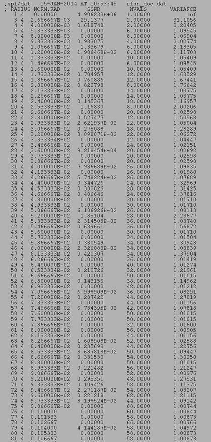

| .OPERATION: | RF SN | ; Spectral SNR, resolution determination & integral SNR |
| .INPUT IMAGE TEMPLATE: | frc_* | ; Image template (input) |
| .INPUT IMAGES: | 1-2 | ; Image list |
| .MASK FILE: | rfsn_mask | ; Lower & upper scale factors |
| .RING WIDTH (RECIPROCAL SPACE UNITS): | 0.5 | ; Ring width |
| .OUTPUT DOCUMENT FILE: | rfsn_doc | ; Doc file (output) |
| FIRST INPUT IMAGE | SECOND INPUT IMAGE | |
|---|---|---|
| | |
| frc_1 | frc_2 |
| OUTPUT DOC FILE (TRUNCATED) |
|---|
|  |
| rfsn_doc |